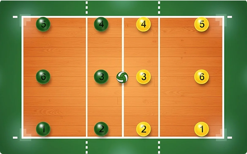
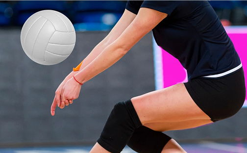

Волейбол — это динамичная командная игра, где успех зависит от слаженных действий всех шести игроков на площадке. Понимание расстановки и ролей каждого игрока — ключ к эффективной игре. В волейболе существует шесть позиций, которые игроки занимают на площадке, разделенной на две зоны: переднюю и заднюю.

Передняя линия (ближе к сетке):
- Позиция 2: Обычно здесь располагается игрок, отвечающий за атаку по краю.
- Позиция 3: Чаще всего это блокирующий или связующий, который может быстро перейти к нападению.
- Позиция 4: Один из основных атакующих игроков.
Задняя линия (дальше от сетки):
- Позиция 1 (крайняя правая): Обычно здесь находится игрок, который будет перемещаться на переднюю линию для атаки.
- Позиция 6 (центральная): Либеро (если есть) или блокирующий, который страхует центр.
- Позиция 5 (крайняя левая): Защитник, страхующий атакующих игроков с передней линии.
Прием мяча — это важнейший элемент волейбола.
Именно с качественной «доводки» начинается результативная атака. На данном изображении наглядно показана классическая техника нижнего приема (паса предплечьями).

Техника приема мяча снизу: коротко о главном
- Платформа: Руки полностью выпрямлены в локтях и плотно сведены. Локти смотрят друг на друга.
- Замок: Кисти соединены вместе, пальцы направлены вниз.
- Точка касания: Мяч принимается на нижнюю часть предплечий (чуть выше запястий), а не на кулаки.
- Работа ног: Колени согнуты. Мяч направляется за счет выпрямления ног и движения плеч, а не замаха руками.
- Контроль: Корпус слегка наклонен вперед, взгляд направлен на мяч.
Главное правило: Не бейте по мячу руками — встречайте его корпусом и «выталкивайте» ногами.